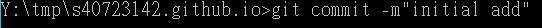
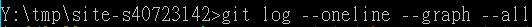
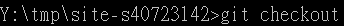
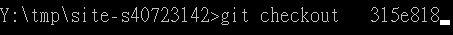
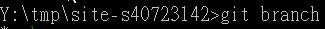
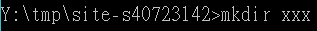
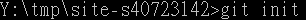

簡介
40723142計算機程式與電腦輔助設計實習課程分組網站
我的頻道:https://www.youtube.com/channel/UCnB9vOD3ZTELtAvK0I5VAtg?view_as=subscriber
p37使用軟體

cd=更換目錄

cls=清理

c:切換

cd \ 讓目錄回到最初的點

git =執行每項指令的開頭語

clone=將網址上的檔案載到目前位址裡
===========================================================
更新四部曲>status>add .>commit>push
status=查看內容

add.=將更新內容存檔

commit=將更新內容提交
push=將更新內容推上去

==========================================================
git log=查看目前已推送的版本號

git log --oneline --graph --all =將版本號資訊縮成一行

============================================================
git checkout 可搭配許多指令
單純的git checkout=查看遠端倉儲的分支

git checkout (分支名)=切換分支

git checkout版本號=將版本回朔到指定的版本

=========================================================
其他git指令
git branch =查看目前分支

mkdir (自訂義檔名)=再目前目錄新增資料夾

git init =在當前目錄新增.git

Next >> CMSimfly 網站